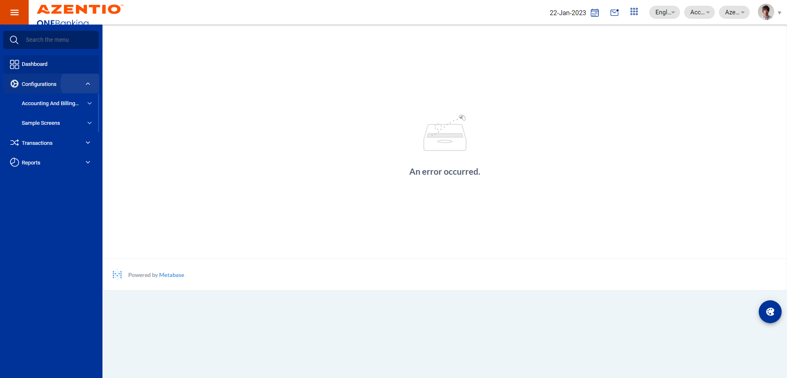
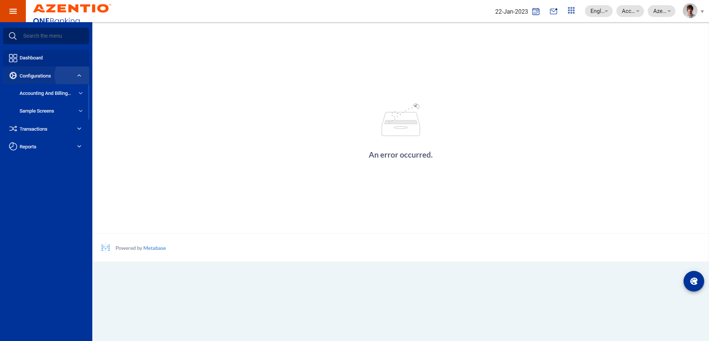
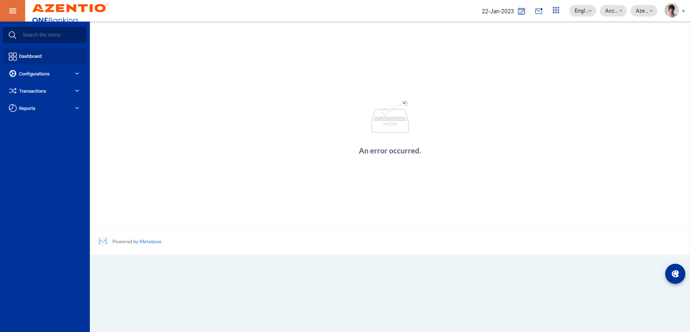
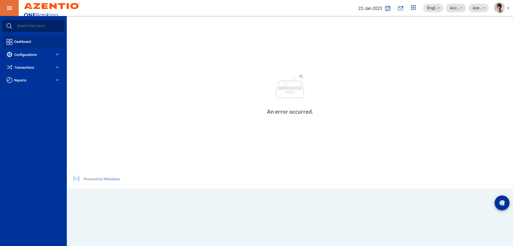
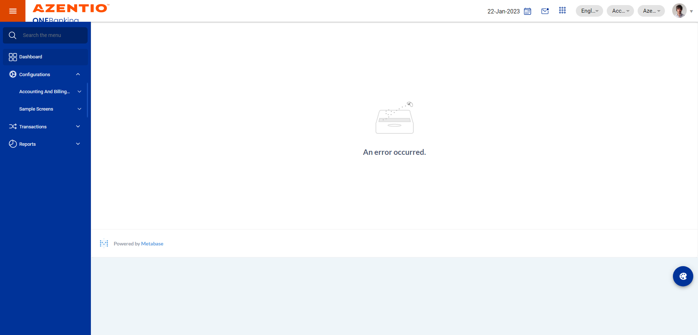
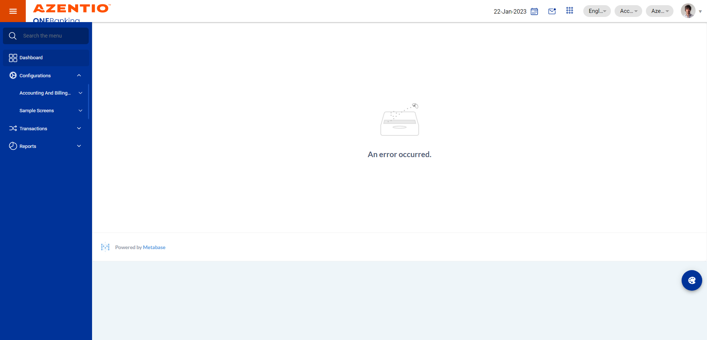
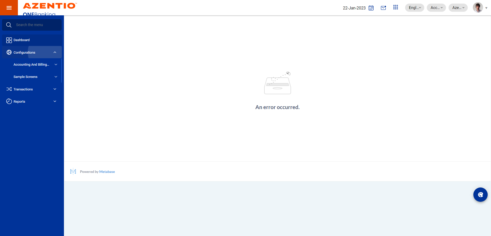
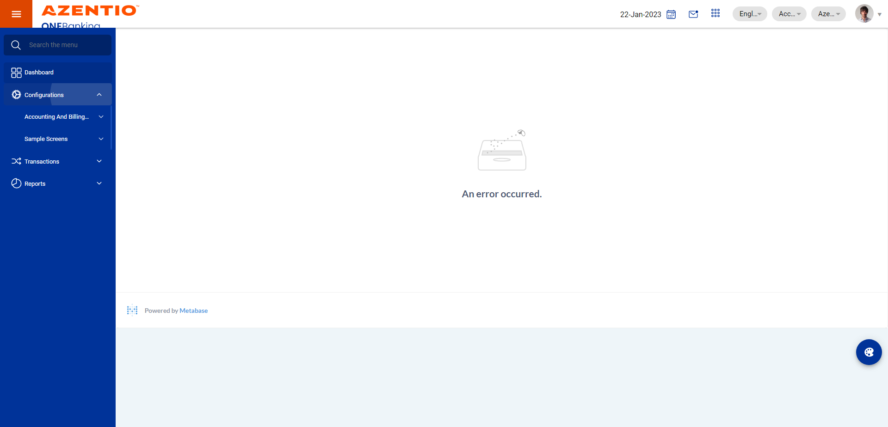

-
To verify the Appropriation master full flow
12:27:18 pm / 46:21:325 Fail
To verify the Appropriation master full flow
03.23.2023 12:27:18 03.23.2023 12:43:39 46:21:325 · #test-id=1FailTo verify the user able to create the Appropriation record in maker stageGiven User login as uls maker in asset CD masterstepdefinitions.HooksClass.addScreenshot(io.cucumber.java.Scenario)screenshot Then User click the Configurations in asset auto masterstepdefinitions.HooksClass.addScreenshot(io.cucumber.java.Scenario)screenshot
Then User click the Configurations in asset auto masterstepdefinitions.HooksClass.addScreenshot(io.cucumber.java.Scenario)screenshot Then User click the config manager in Appropriation masterstepdefinitions.HooksClass.addScreenshot(io.cucumber.java.Scenario)screenshot
Then User click the config manager in Appropriation masterstepdefinitions.HooksClass.addScreenshot(io.cucumber.java.Scenario)screenshot And User click the Appropriation master edit iconStep skippedAnd User click the add icon in Appropriation masterStep skippedAnd User enter the values in description for Appropriation masterStep skippedAnd User enter the values in Appropriation Type for Appropriation masterStep skippedAnd User enter the values in Remarks for Appropriation masterStep skippedAnd User click the save icon in Appropriation masterStep skippedAnd User get the save confirmation msg in Appropriation masterStep skippedAnd User click the action edit icon in Appropriation masterStep skippedAnd User click the add icon in list of Appropriation details for Appropriation masterStep skippedAnd User enter the values in due type for Appropriation masterStep skippedAnd User enter the values in sequence no for Appropriation masterStep skippedAnd User enter the values in parent sequence no for Appropriation masterStep skippedAnd User enter the values in list of appropriation remarks for Appropriation masterStep skippedAnd User click the save icon in Appropriation masterStep skippedAnd User get the save confirmation msg1 in Appropriation masterStep skippedFailTo verify the user can able to deactivate the record and the record should removed the record from the systemGiven User login as uls maker in asset CD masterstepdefinitions.HooksClass.addScreenshot(io.cucumber.java.Scenario)screenshot
And User click the Appropriation master edit iconStep skippedAnd User click the add icon in Appropriation masterStep skippedAnd User enter the values in description for Appropriation masterStep skippedAnd User enter the values in Appropriation Type for Appropriation masterStep skippedAnd User enter the values in Remarks for Appropriation masterStep skippedAnd User click the save icon in Appropriation masterStep skippedAnd User get the save confirmation msg in Appropriation masterStep skippedAnd User click the action edit icon in Appropriation masterStep skippedAnd User click the add icon in list of Appropriation details for Appropriation masterStep skippedAnd User enter the values in due type for Appropriation masterStep skippedAnd User enter the values in sequence no for Appropriation masterStep skippedAnd User enter the values in parent sequence no for Appropriation masterStep skippedAnd User enter the values in list of appropriation remarks for Appropriation masterStep skippedAnd User click the save icon in Appropriation masterStep skippedAnd User get the save confirmation msg1 in Appropriation masterStep skippedFailTo verify the user can able to deactivate the record and the record should removed the record from the systemGiven User login as uls maker in asset CD masterstepdefinitions.HooksClass.addScreenshot(io.cucumber.java.Scenario)screenshot Then User click the Configurations in asset auto masterstepdefinitions.HooksClass.addScreenshot(io.cucumber.java.Scenario)screenshotThen User click the config manager in Appropriation masterstepdefinitions.HooksClass.addScreenshot(io.cucumber.java.Scenario)screenshot
Then User click the Configurations in asset auto masterstepdefinitions.HooksClass.addScreenshot(io.cucumber.java.Scenario)screenshotThen User click the config manager in Appropriation masterstepdefinitions.HooksClass.addScreenshot(io.cucumber.java.Scenario)screenshot And User click the Appropriation master edit iconStep skippedAnd User click the action edit icon in Appropriation masterStep skippedAnd User click the status icon in appropriation masterStep skippedAnd User click the UpdateSave icon in Appropriation masterStep skippedThen User click the inboxmail icon in asset CD masterStep skippedAnd User search the appropriation master in inboxStep skippedAnd User get the reference id in appropriation master test case2Step skippedAnd User click the first record in appropriation masterStep skippedAnd User click the cancel icon in appropriation masterStep skippedAnd User enter the popup input messege in appropriation masterStep skippedAnd user click the popup cancel in appropriation masterStep skippedAnd User get the cancel confirmation messege in appropriation masterStep skippedAnd User verify the record removed from the systemStep skippedFailTo verify the user enter the invalid details in appropriation masterGiven User login as uls maker in asset CD masterstepdefinitions.HooksClass.addScreenshot(io.cucumber.java.Scenario)screenshot
And User click the Appropriation master edit iconStep skippedAnd User click the action edit icon in Appropriation masterStep skippedAnd User click the status icon in appropriation masterStep skippedAnd User click the UpdateSave icon in Appropriation masterStep skippedThen User click the inboxmail icon in asset CD masterStep skippedAnd User search the appropriation master in inboxStep skippedAnd User get the reference id in appropriation master test case2Step skippedAnd User click the first record in appropriation masterStep skippedAnd User click the cancel icon in appropriation masterStep skippedAnd User enter the popup input messege in appropriation masterStep skippedAnd user click the popup cancel in appropriation masterStep skippedAnd User get the cancel confirmation messege in appropriation masterStep skippedAnd User verify the record removed from the systemStep skippedFailTo verify the user enter the invalid details in appropriation masterGiven User login as uls maker in asset CD masterstepdefinitions.HooksClass.addScreenshot(io.cucumber.java.Scenario)screenshot Then User click the Configurations in asset auto masterstepdefinitions.HooksClass.addScreenshot(io.cucumber.java.Scenario)screenshotThen User click the config manager in Appropriation masterstepdefinitions.HooksClass.addScreenshot(io.cucumber.java.Scenario)screenshot
Then User click the Configurations in asset auto masterstepdefinitions.HooksClass.addScreenshot(io.cucumber.java.Scenario)screenshotThen User click the config manager in Appropriation masterstepdefinitions.HooksClass.addScreenshot(io.cucumber.java.Scenario)screenshot And User click the Appropriation master edit iconStep skippedAnd User click the action edit icon in Appropriation masterStep skippedAnd User click the add icon in list of Appropriation details for Appropriation masterStep skippedAnd User enter the values in due type for Appropriation master validationStep skippedAnd User enter the values in sequence no for Appropriation master validationStep skippedAnd User enter the values in parent sequence no for Appropriation master validationStep skippedAnd User enter the values in list of appropriation remarks for Appropriation master validationStep skippedAnd User click the save icon in Appropriation masterStep skippedAnd User verify the invalid field popup confirmation in appropriationStep skippedFailTo verify system display the proper validation message when user keep any mandatory fields blank and clicks on save buttonGiven User login as uls maker in asset CD masterstepdefinitions.HooksClass.addScreenshot(io.cucumber.java.Scenario)screenshot
And User click the Appropriation master edit iconStep skippedAnd User click the action edit icon in Appropriation masterStep skippedAnd User click the add icon in list of Appropriation details for Appropriation masterStep skippedAnd User enter the values in due type for Appropriation master validationStep skippedAnd User enter the values in sequence no for Appropriation master validationStep skippedAnd User enter the values in parent sequence no for Appropriation master validationStep skippedAnd User enter the values in list of appropriation remarks for Appropriation master validationStep skippedAnd User click the save icon in Appropriation masterStep skippedAnd User verify the invalid field popup confirmation in appropriationStep skippedFailTo verify system display the proper validation message when user keep any mandatory fields blank and clicks on save buttonGiven User login as uls maker in asset CD masterstepdefinitions.HooksClass.addScreenshot(io.cucumber.java.Scenario)screenshot Then User click the Configurations in asset auto masterstepdefinitions.HooksClass.addScreenshot(io.cucumber.java.Scenario)screenshot
Then User click the Configurations in asset auto masterstepdefinitions.HooksClass.addScreenshot(io.cucumber.java.Scenario)screenshot Then User click the config manager in Appropriation masterstepdefinitions.HooksClass.addScreenshot(io.cucumber.java.Scenario)screenshot
Then User click the config manager in Appropriation masterstepdefinitions.HooksClass.addScreenshot(io.cucumber.java.Scenario)screenshot And User click the Appropriation master edit iconStep skippedAnd User click the action edit icon in Appropriation masterStep skippedAnd User click the add icon in list of Appropriation details for Appropriation masterStep skippedAnd User enter the values in due type for Appropriation master validation1Step skippedAnd User click the save icon in Appropriation masterStep skippedAnd User verify the invalid field popup confirmation in appropriationStep skippedFailTo verify user can able to update the before approve recordGiven User login as uls maker in asset CD masterstepdefinitions.HooksClass.addScreenshot(io.cucumber.java.Scenario)screenshot
And User click the Appropriation master edit iconStep skippedAnd User click the action edit icon in Appropriation masterStep skippedAnd User click the add icon in list of Appropriation details for Appropriation masterStep skippedAnd User enter the values in due type for Appropriation master validation1Step skippedAnd User click the save icon in Appropriation masterStep skippedAnd User verify the invalid field popup confirmation in appropriationStep skippedFailTo verify user can able to update the before approve recordGiven User login as uls maker in asset CD masterstepdefinitions.HooksClass.addScreenshot(io.cucumber.java.Scenario)screenshot Then User click the Configurations in asset auto masterstepdefinitions.HooksClass.addScreenshot(io.cucumber.java.Scenario)screenshot
Then User click the Configurations in asset auto masterstepdefinitions.HooksClass.addScreenshot(io.cucumber.java.Scenario)screenshot Then User click the config manager in Appropriation masterstepdefinitions.HooksClass.addScreenshot(io.cucumber.java.Scenario)screenshot
Then User click the config manager in Appropriation masterstepdefinitions.HooksClass.addScreenshot(io.cucumber.java.Scenario)screenshot And User click the Appropriation master edit iconStep skippedAnd User click the action edit icon in Appropriation masterStep skippedAnd User update the values in description for Appropriation masterStep skippedAnd User update the values in Appropriation Type for Appropriation masterStep skippedAnd User update the values in Remarks for Appropriation masterStep skippedAnd User click the update save icon in Appropriation masterStep skippedAnd User click the inbox icon in Appropriation masterStep skippedAnd User search the appropriation master recordStep skippedAnd User click the action edit icon and get the reference id in Appropriation masterStep skippedAnd User click the submit icon in appropriation master makerStep skippedAnd User enter the popup remark and submit the appropriation masterStep skippedAnd User get confirmation message and checker id in appropriation masterStep skippedFailTo verify user can able to approve the record in checker stageAnd Get the test data for appropriation master test case6stepdefinitions.HooksClass.addScreenshot(io.cucumber.java.Scenario)screenshot
And User click the Appropriation master edit iconStep skippedAnd User click the action edit icon in Appropriation masterStep skippedAnd User update the values in description for Appropriation masterStep skippedAnd User update the values in Appropriation Type for Appropriation masterStep skippedAnd User update the values in Remarks for Appropriation masterStep skippedAnd User click the update save icon in Appropriation masterStep skippedAnd User click the inbox icon in Appropriation masterStep skippedAnd User search the appropriation master recordStep skippedAnd User click the action edit icon and get the reference id in Appropriation masterStep skippedAnd User click the submit icon in appropriation master makerStep skippedAnd User enter the popup remark and submit the appropriation masterStep skippedAnd User get confirmation message and checker id in appropriation masterStep skippedFailTo verify user can able to approve the record in checker stageAnd Get the test data for appropriation master test case6stepdefinitions.HooksClass.addScreenshot(io.cucumber.java.Scenario)screenshot Given User login as uls checker in appropriation masterstepdefinitions.HooksClass.addScreenshot(io.cucumber.java.Scenario)screenshot
Given User login as uls checker in appropriation masterstepdefinitions.HooksClass.addScreenshot(io.cucumber.java.Scenario)screenshot And User click the inbox icon in Appropriation masterStep skippedAnd User search the appropriation master in inboxStep skippedAnd User search the respective reference id and click on Action button in appropriation masterStep skippedAnd User click on Approve icon in appropriation master checkerStep skippedAnd User click the popup remarks in appropriation master checkerStep skippedAnd User click the popup approve in appropriation master checkerStep skippedThen User verify the Record got Approved in appropriation checkerStep skippedFailTo verify the user able to create the Appropriation record in maker stageGiven User login as uls maker in asset CD masterstepdefinitions.HooksClass.addScreenshot(io.cucumber.java.Scenario)screenshotThen User click the Configurations in asset auto masterstepdefinitions.HooksClass.addScreenshot(io.cucumber.java.Scenario)screenshot
And User click the inbox icon in Appropriation masterStep skippedAnd User search the appropriation master in inboxStep skippedAnd User search the respective reference id and click on Action button in appropriation masterStep skippedAnd User click on Approve icon in appropriation master checkerStep skippedAnd User click the popup remarks in appropriation master checkerStep skippedAnd User click the popup approve in appropriation master checkerStep skippedThen User verify the Record got Approved in appropriation checkerStep skippedFailTo verify the user able to create the Appropriation record in maker stageGiven User login as uls maker in asset CD masterstepdefinitions.HooksClass.addScreenshot(io.cucumber.java.Scenario)screenshotThen User click the Configurations in asset auto masterstepdefinitions.HooksClass.addScreenshot(io.cucumber.java.Scenario)screenshot Then User click the config manager in Appropriation masterstepdefinitions.HooksClass.addScreenshot(io.cucumber.java.Scenario)screenshot
Then User click the config manager in Appropriation masterstepdefinitions.HooksClass.addScreenshot(io.cucumber.java.Scenario)screenshot And User click the Appropriation master edit iconStep skippedAnd User click the add icon in Appropriation masterStep skippedAnd User enter the values in description for Appropriation masterStep skippedAnd User enter the values in Appropriation Type for Appropriation masterStep skippedAnd User enter the values in Remarks for Appropriation masterStep skippedAnd User click the save icon in Appropriation masterStep skippedAnd User get the save confirmation msg in Appropriation masterStep skippedAnd User click the action edit icon in Appropriation masterStep skippedAnd User click the add icon in list of Appropriation details for Appropriation masterStep skippedAnd User enter the values in due type for Appropriation masterStep skippedAnd User enter the values in sequence no for Appropriation masterStep skippedAnd User enter the values in parent sequence no for Appropriation masterStep skippedAnd User enter the values in list of appropriation remarks for Appropriation masterStep skippedAnd User click the save icon in Appropriation masterStep skippedAnd User get the save confirmation msg1 in Appropriation masterStep skippedFailTo verify while modification system allow user to save the record with valid dataGiven User login as uls maker in asset CD masterstepdefinitions.HooksClass.addScreenshot(io.cucumber.java.Scenario)screenshot
And User click the Appropriation master edit iconStep skippedAnd User click the add icon in Appropriation masterStep skippedAnd User enter the values in description for Appropriation masterStep skippedAnd User enter the values in Appropriation Type for Appropriation masterStep skippedAnd User enter the values in Remarks for Appropriation masterStep skippedAnd User click the save icon in Appropriation masterStep skippedAnd User get the save confirmation msg in Appropriation masterStep skippedAnd User click the action edit icon in Appropriation masterStep skippedAnd User click the add icon in list of Appropriation details for Appropriation masterStep skippedAnd User enter the values in due type for Appropriation masterStep skippedAnd User enter the values in sequence no for Appropriation masterStep skippedAnd User enter the values in parent sequence no for Appropriation masterStep skippedAnd User enter the values in list of appropriation remarks for Appropriation masterStep skippedAnd User click the save icon in Appropriation masterStep skippedAnd User get the save confirmation msg1 in Appropriation masterStep skippedFailTo verify while modification system allow user to save the record with valid dataGiven User login as uls maker in asset CD masterstepdefinitions.HooksClass.addScreenshot(io.cucumber.java.Scenario)screenshot Then User click the Configurations in asset auto masterstepdefinitions.HooksClass.addScreenshot(io.cucumber.java.Scenario)screenshotThen User click the config manager in Appropriation masterstepdefinitions.HooksClass.addScreenshot(io.cucumber.java.Scenario)screenshot
Then User click the Configurations in asset auto masterstepdefinitions.HooksClass.addScreenshot(io.cucumber.java.Scenario)screenshotThen User click the config manager in Appropriation masterstepdefinitions.HooksClass.addScreenshot(io.cucumber.java.Scenario)screenshot And User click the Appropriation master edit iconStep skippedAnd User click the action edit icon in Appropriation masterStep skippedAnd User update the description for Appropriation master valitationStep skippedAnd User click the update save icon in Appropriation masterStep skippedAnd User verify while modification, when user keep any mandatory field blank in appropriation masterStep skippedAnd User click the Appropriation master edit iconStep skippedAnd User click the action edit icon in Appropriation masterStep skippedAnd User update the values in description for Appropriation masterStep skippedAnd User update the values in Appropriation Type for Appropriation master valitationStep skippedAnd User click the update save icon in Appropriation masterStep skippedAnd User verify while modification system enters the invalid data in appropriation masterStep skippedAnd User update the values in Appropriation Type for Appropriation masterStep skippedAnd User click the update save icon in Appropriation masterStep skippedAnd User get the success confirmation message in appropriation masterStep skippedFailTo verify the user able to create the Appropriation record in maker stageGiven User login as uls maker in asset CD masterstepdefinitions.HooksClass.addScreenshot(io.cucumber.java.Scenario)screenshotThen User click the Configurations in asset auto masterstepdefinitions.HooksClass.addScreenshot(io.cucumber.java.Scenario)screenshot
And User click the Appropriation master edit iconStep skippedAnd User click the action edit icon in Appropriation masterStep skippedAnd User update the description for Appropriation master valitationStep skippedAnd User click the update save icon in Appropriation masterStep skippedAnd User verify while modification, when user keep any mandatory field blank in appropriation masterStep skippedAnd User click the Appropriation master edit iconStep skippedAnd User click the action edit icon in Appropriation masterStep skippedAnd User update the values in description for Appropriation masterStep skippedAnd User update the values in Appropriation Type for Appropriation master valitationStep skippedAnd User click the update save icon in Appropriation masterStep skippedAnd User verify while modification system enters the invalid data in appropriation masterStep skippedAnd User update the values in Appropriation Type for Appropriation masterStep skippedAnd User click the update save icon in Appropriation masterStep skippedAnd User get the success confirmation message in appropriation masterStep skippedFailTo verify the user able to create the Appropriation record in maker stageGiven User login as uls maker in asset CD masterstepdefinitions.HooksClass.addScreenshot(io.cucumber.java.Scenario)screenshotThen User click the Configurations in asset auto masterstepdefinitions.HooksClass.addScreenshot(io.cucumber.java.Scenario)screenshot Then User click the config manager in Appropriation masterstepdefinitions.HooksClass.addScreenshot(io.cucumber.java.Scenario)screenshotAnd User click the Appropriation master edit iconStep skippedAnd User click the add icon in Appropriation masterStep skippedAnd User enter the values in description for Appropriation masterStep skippedAnd User enter the values in Appropriation Type for Appropriation masterStep skippedAnd User enter the values in Remarks for Appropriation masterStep skippedAnd User click the save icon in Appropriation masterStep skippedAnd User get the save confirmation msg in Appropriation masterStep skippedAnd User click the action edit icon in Appropriation masterStep skippedAnd User click the add icon in list of Appropriation details for Appropriation masterStep skippedAnd User enter the values in due type for Appropriation masterStep skippedAnd User enter the values in sequence no for Appropriation masterStep skippedAnd User enter the values in parent sequence no for Appropriation masterStep skippedAnd User enter the values in list of appropriation remarks for Appropriation masterStep skippedAnd User click the save icon in Appropriation masterStep skippedAnd User get the save confirmation msg1 in Appropriation masterStep skippedAnd User click the inbox icon in Appropriation masterStep skippedAnd User search the appropriation master recordStep skippedAnd User click the action edit icon and get the reference id in Appropriation masterStep skippedAnd User click the submit icon in appropriation master makerStep skippedAnd User enter the popup remark and submit the appropriation masterStep skippedAnd User get confirmation message and checker id in appropriation masterStep skippedFailTo verify user can able to Reject the record in checker stageAnd Get the test data for appropriation master test case8stepdefinitions.HooksClass.addScreenshot(io.cucumber.java.Scenario)screenshot
Then User click the config manager in Appropriation masterstepdefinitions.HooksClass.addScreenshot(io.cucumber.java.Scenario)screenshotAnd User click the Appropriation master edit iconStep skippedAnd User click the add icon in Appropriation masterStep skippedAnd User enter the values in description for Appropriation masterStep skippedAnd User enter the values in Appropriation Type for Appropriation masterStep skippedAnd User enter the values in Remarks for Appropriation masterStep skippedAnd User click the save icon in Appropriation masterStep skippedAnd User get the save confirmation msg in Appropriation masterStep skippedAnd User click the action edit icon in Appropriation masterStep skippedAnd User click the add icon in list of Appropriation details for Appropriation masterStep skippedAnd User enter the values in due type for Appropriation masterStep skippedAnd User enter the values in sequence no for Appropriation masterStep skippedAnd User enter the values in parent sequence no for Appropriation masterStep skippedAnd User enter the values in list of appropriation remarks for Appropriation masterStep skippedAnd User click the save icon in Appropriation masterStep skippedAnd User get the save confirmation msg1 in Appropriation masterStep skippedAnd User click the inbox icon in Appropriation masterStep skippedAnd User search the appropriation master recordStep skippedAnd User click the action edit icon and get the reference id in Appropriation masterStep skippedAnd User click the submit icon in appropriation master makerStep skippedAnd User enter the popup remark and submit the appropriation masterStep skippedAnd User get confirmation message and checker id in appropriation masterStep skippedFailTo verify user can able to Reject the record in checker stageAnd Get the test data for appropriation master test case8stepdefinitions.HooksClass.addScreenshot(io.cucumber.java.Scenario)screenshot Given User login as uls checker in appropriation masterstepdefinitions.HooksClass.addScreenshot(io.cucumber.java.Scenario)screenshot
Given User login as uls checker in appropriation masterstepdefinitions.HooksClass.addScreenshot(io.cucumber.java.Scenario)screenshot And User click the inbox icon in Appropriation masterStep skippedAnd User search the appropriation master in inboxStep skippedAnd User search the respective reference id and click on Action button in appropriation masterStep skippedAnd User click the reject icon in appropriation master checkerStep skippedAnd User click the popup remarks in appropriation master checkerStep skippedAnd User click the popup reject in appropriation master checkerStep skippedThen User verify the Record got Rejected in appropriation checkerStep skippedFailTo verify the user able to create the Appropriation record in maker stageGiven User login as uls maker in asset CD masterstepdefinitions.HooksClass.addScreenshot(io.cucumber.java.Scenario)screenshot
And User click the inbox icon in Appropriation masterStep skippedAnd User search the appropriation master in inboxStep skippedAnd User search the respective reference id and click on Action button in appropriation masterStep skippedAnd User click the reject icon in appropriation master checkerStep skippedAnd User click the popup remarks in appropriation master checkerStep skippedAnd User click the popup reject in appropriation master checkerStep skippedThen User verify the Record got Rejected in appropriation checkerStep skippedFailTo verify the user able to create the Appropriation record in maker stageGiven User login as uls maker in asset CD masterstepdefinitions.HooksClass.addScreenshot(io.cucumber.java.Scenario)screenshot Then User click the Configurations in asset auto masterstepdefinitions.HooksClass.addScreenshot(io.cucumber.java.Scenario)screenshotThen User click the config manager in Appropriation masterstepdefinitions.HooksClass.addScreenshot(io.cucumber.java.Scenario)screenshot
Then User click the Configurations in asset auto masterstepdefinitions.HooksClass.addScreenshot(io.cucumber.java.Scenario)screenshotThen User click the config manager in Appropriation masterstepdefinitions.HooksClass.addScreenshot(io.cucumber.java.Scenario)screenshot And User click the Appropriation master edit iconStep skippedAnd User click the add icon in Appropriation masterStep skippedAnd User enter the values in description for Appropriation masterStep skippedAnd User enter the values in Appropriation Type for Appropriation masterStep skippedAnd User enter the values in Remarks for Appropriation masterStep skippedAnd User click the save icon in Appropriation masterStep skippedAnd User get the save confirmation msg in Appropriation masterStep skippedAnd User click the action edit icon in Appropriation masterStep skippedAnd User click the add icon in list of Appropriation details for Appropriation masterStep skippedAnd User enter the values in due type for Appropriation masterStep skippedAnd User enter the values in sequence no for Appropriation masterStep skippedAnd User enter the values in parent sequence no for Appropriation masterStep skippedAnd User enter the values in list of appropriation remarks for Appropriation masterStep skippedAnd User click the save icon in Appropriation masterStep skippedAnd User get the save confirmation msg1 in Appropriation masterStep skippedAnd User click the inbox icon in Appropriation masterStep skippedAnd User search the appropriation master recordStep skippedAnd User click the action edit icon and get the reference id in Appropriation masterStep skippedAnd User click the submit icon in appropriation master makerStep skippedAnd User enter the popup remark and submit the appropriation masterStep skippedAnd User get confirmation message and checker id in appropriation masterStep skippedFailTo verify user can able to Return the record in checker stageAnd Get the test data for appropriation master test case9stepdefinitions.HooksClass.addScreenshot(io.cucumber.java.Scenario)screenshot
And User click the Appropriation master edit iconStep skippedAnd User click the add icon in Appropriation masterStep skippedAnd User enter the values in description for Appropriation masterStep skippedAnd User enter the values in Appropriation Type for Appropriation masterStep skippedAnd User enter the values in Remarks for Appropriation masterStep skippedAnd User click the save icon in Appropriation masterStep skippedAnd User get the save confirmation msg in Appropriation masterStep skippedAnd User click the action edit icon in Appropriation masterStep skippedAnd User click the add icon in list of Appropriation details for Appropriation masterStep skippedAnd User enter the values in due type for Appropriation masterStep skippedAnd User enter the values in sequence no for Appropriation masterStep skippedAnd User enter the values in parent sequence no for Appropriation masterStep skippedAnd User enter the values in list of appropriation remarks for Appropriation masterStep skippedAnd User click the save icon in Appropriation masterStep skippedAnd User get the save confirmation msg1 in Appropriation masterStep skippedAnd User click the inbox icon in Appropriation masterStep skippedAnd User search the appropriation master recordStep skippedAnd User click the action edit icon and get the reference id in Appropriation masterStep skippedAnd User click the submit icon in appropriation master makerStep skippedAnd User enter the popup remark and submit the appropriation masterStep skippedAnd User get confirmation message and checker id in appropriation masterStep skippedFailTo verify user can able to Return the record in checker stageAnd Get the test data for appropriation master test case9stepdefinitions.HooksClass.addScreenshot(io.cucumber.java.Scenario)screenshot Given User login as uls checker in appropriation masterstepdefinitions.HooksClass.addScreenshot(io.cucumber.java.Scenario)screenshotAnd User click the inbox icon in Appropriation masterStep skippedAnd User search the appropriation master in inboxStep skippedAnd User search the respective reference id and click on Action button in appropriation masterStep skippedAnd User click the return icon in appropriation master checkerStep skippedAnd User click the popup remarks in appropriation master checkerStep skippedAnd User click the final return icon in appropriation master checkerStep skippedThen User verify the Record got Returned in appropriation master checkerStep skippedFailTo verify the functionality of status button in appropriation masterGiven User login as uls maker in asset CD masterstepdefinitions.HooksClass.addScreenshot(io.cucumber.java.Scenario)screenshotThen User click the Configurations in asset auto masterstepdefinitions.HooksClass.addScreenshot(io.cucumber.java.Scenario)screenshotThen User click the config manager in Appropriation masterstepdefinitions.HooksClass.addScreenshot(io.cucumber.java.Scenario)screenshot
Given User login as uls checker in appropriation masterstepdefinitions.HooksClass.addScreenshot(io.cucumber.java.Scenario)screenshotAnd User click the inbox icon in Appropriation masterStep skippedAnd User search the appropriation master in inboxStep skippedAnd User search the respective reference id and click on Action button in appropriation masterStep skippedAnd User click the return icon in appropriation master checkerStep skippedAnd User click the popup remarks in appropriation master checkerStep skippedAnd User click the final return icon in appropriation master checkerStep skippedThen User verify the Record got Returned in appropriation master checkerStep skippedFailTo verify the functionality of status button in appropriation masterGiven User login as uls maker in asset CD masterstepdefinitions.HooksClass.addScreenshot(io.cucumber.java.Scenario)screenshotThen User click the Configurations in asset auto masterstepdefinitions.HooksClass.addScreenshot(io.cucumber.java.Scenario)screenshotThen User click the config manager in Appropriation masterstepdefinitions.HooksClass.addScreenshot(io.cucumber.java.Scenario)screenshot And User click the Appropriation master edit iconStep skippedThen User click the back button in appropriation masterStep skippedAnd User click the Appropriation master edit iconStep skippedAnd User click the action edit icon in Appropriation masterStep skippedAnd User verify the status button is active stage in appropriation masterStep skippedAnd User click the status icon in appropriation masterStep skippedAnd User verify the status button is deactive stage in appropriation masterStep skippedFailTo verify the functionality of PDF and Excel file downloadAnd Get the test data for appropriation master test case11stepdefinitions.HooksClass.addScreenshot(io.cucumber.java.Scenario)screenshot
And User click the Appropriation master edit iconStep skippedThen User click the back button in appropriation masterStep skippedAnd User click the Appropriation master edit iconStep skippedAnd User click the action edit icon in Appropriation masterStep skippedAnd User verify the status button is active stage in appropriation masterStep skippedAnd User click the status icon in appropriation masterStep skippedAnd User verify the status button is deactive stage in appropriation masterStep skippedFailTo verify the functionality of PDF and Excel file downloadAnd Get the test data for appropriation master test case11stepdefinitions.HooksClass.addScreenshot(io.cucumber.java.Scenario)screenshot Given User login as uls maker in asset CD masterstepdefinitions.HooksClass.addScreenshot(io.cucumber.java.Scenario)screenshotThen User click the Configurations in asset auto masterstepdefinitions.HooksClass.addScreenshot(io.cucumber.java.Scenario)screenshotThen User click the config manager in Appropriation masterstepdefinitions.HooksClass.addScreenshot(io.cucumber.java.Scenario)screenshotAnd User click the Appropriation master eye iconStep skippedAnd user verify add button is displayed for appropriation masterStep skippedAnd user verify search for record icon is displayed for appropriation masterStep skippedAnd user verify export to pdf option is displayed for appropriation masterStep skippedAnd user verify export to excel option is displayed for appropriation masterStep skippedAnd User verify the Values in List view should be non editable in appropriation masterStep skippedAnd User verify the functionality of Export to PDF button in appropriation masterStep skippedAnd User verify the functionality of Export to Excel button in appropriation masterStep skippedAnd user verify the search results show matched data for appropriation masterStep skippedAnd user verify the search results shows no data for appropriation masterStep skipped
Given User login as uls maker in asset CD masterstepdefinitions.HooksClass.addScreenshot(io.cucumber.java.Scenario)screenshotThen User click the Configurations in asset auto masterstepdefinitions.HooksClass.addScreenshot(io.cucumber.java.Scenario)screenshotThen User click the config manager in Appropriation masterstepdefinitions.HooksClass.addScreenshot(io.cucumber.java.Scenario)screenshotAnd User click the Appropriation master eye iconStep skippedAnd user verify add button is displayed for appropriation masterStep skippedAnd user verify search for record icon is displayed for appropriation masterStep skippedAnd user verify export to pdf option is displayed for appropriation masterStep skippedAnd user verify export to excel option is displayed for appropriation masterStep skippedAnd User verify the Values in List view should be non editable in appropriation masterStep skippedAnd User verify the functionality of Export to PDF button in appropriation masterStep skippedAnd User verify the functionality of Export to Excel button in appropriation masterStep skippedAnd user verify the search results show matched data for appropriation masterStep skippedAnd user verify the search results shows no data for appropriation masterStep skipped
Started
Mar 23, 2023 12:27:15 pm
Ended
Mar 23, 2023 12:43:39 pm
Features Passed
0
Features Failed
1
Features
Scenarios
Steps
Timeline
Tags
| Name | Passed | Failed | Skipped | Others | Passed % |
|---|---|---|---|---|---|
| @AT-AM-008-Pre-Request | 0 | 1 | 0 | 0 | 0% |
| @AT-AM-003 | 0 | 1 | 0 | 0 | 0% |
| @AT-AM-004 | 0 | 1 | 0 | 0 | 0% |
| @AT-AM-007 | 0 | 1 | 0 | 0 | 0% |
| @AT-AM-005 | 0 | 1 | 0 | 0 | 0% |
| @AT-AM-006 | 0 | 1 | 0 | 0 | 0% |
| @AT-AM-008 | 0 | 1 | 0 | 0 | 0% |
| @AT-AM-011 | 0 | 1 | 0 | 0 | 0% |
| @AT-AM-002 | 0 | 1 | 0 | 0 | 0% |
| @AT-AM-001 | 0 | 1 | 0 | 0 | 0% |
| @AT-AM-009-Pre-Request | 0 | 1 | 0 | 0 | 0% |
| @AT-AM-009 | 0 | 1 | 0 | 0 | 0% |
| @AT-AM-010 | 0 | 1 | 0 | 0 | 0% |
| @AT-AM-007-Pre-Request | 0 | 1 | 0 | 0 | 0% |
System/Environment
| Name | Value |
|---|---|
| version | 10 |
| os | windows |
-
@AT-AM-008-Pre-Request
1 tests
@AT-AM-008-Pre-Request
1 failedStatus Timestamp TestName Fail 12:37:32 pm To verify the user able to create the Appropriation record in maker stage To verify the Appropriation master full flow.To verify the user able to create the Appropriation record in maker stage -
@AT-AM-003
1 tests
@AT-AM-003
1 failedStatus Timestamp TestName Fail 12:30:10 pm To verify the user enter the invalid details in appropriation master To verify the Appropriation master full flow.To verify the user enter the invalid details in appropriation master -
@AT-AM-004
1 tests
@AT-AM-004
1 failedStatus Timestamp TestName Fail 12:31:31 pm To verify system display the proper validation message when user keep any mandatory fields blank and clicks on save button To verify the Appropriation master full flow.To verify system display the proper validation message when user keep any mandatory fields blank and clicks on save button -
@AT-AM-007
1 tests
@AT-AM-007
1 failedStatus Timestamp TestName Fail 12:35:47 pm To verify while modification system allow user to save the record with valid data To verify the Appropriation master full flow.To verify while modification system allow user to save the record with valid data -
@AT-AM-005
1 tests
@AT-AM-005
1 failedStatus Timestamp TestName Fail 12:32:51 pm To verify user can able to update the before approve record To verify the Appropriation master full flow.To verify user can able to update the before approve record -
@AT-AM-006
1 tests
@AT-AM-006
1 failedStatus Timestamp TestName Fail 12:34:09 pm To verify user can able to approve the record in checker stage To verify the Appropriation master full flow.To verify user can able to approve the record in checker stage -
@AT-AM-008
1 tests
@AT-AM-008
1 failedStatus Timestamp TestName Fail 12:38:54 pm To verify user can able to Reject the record in checker stage To verify the Appropriation master full flow.To verify user can able to Reject the record in checker stage -
@AT-AM-011
1 tests
@AT-AM-011
1 failedStatus Timestamp TestName Fail 12:42:12 pm To verify the functionality of PDF and Excel file download To verify the Appropriation master full flow.To verify the functionality of PDF and Excel file download -
@AT-AM-002
1 tests
@AT-AM-002
1 failedStatus Timestamp TestName Fail 12:28:46 pm To verify the user can able to deactivate the record and the record should removed the record from the system To verify the Appropriation master full flow.To verify the user can able to deactivate the record and the record should removed the record from the system -
@AT-AM-001
1 tests
@AT-AM-001
1 failedStatus Timestamp TestName Fail 12:27:18 pm To verify the user able to create the Appropriation record in maker stage To verify the Appropriation master full flow.To verify the user able to create the Appropriation record in maker stage -
@AT-AM-009-Pre-Request
1 tests
@AT-AM-009-Pre-Request
1 failedStatus Timestamp TestName Fail 12:39:08 pm To verify the user able to create the Appropriation record in maker stage To verify the Appropriation master full flow.To verify the user able to create the Appropriation record in maker stage -
@AT-AM-009
1 tests
@AT-AM-009
1 failedStatus Timestamp TestName Fail 12:40:29 pm To verify user can able to Return the record in checker stage To verify the Appropriation master full flow.To verify user can able to Return the record in checker stage -
@AT-AM-010
1 tests
@AT-AM-010
1 failedStatus Timestamp TestName Fail 12:40:45 pm To verify the functionality of status button in appropriation master To verify the Appropriation master full flow.To verify the functionality of status button in appropriation master -
@AT-AM-007-Pre-Request
1 tests
@AT-AM-007-Pre-Request
1 failedStatus Timestamp TestName Fail 12:34:26 pm To verify the user able to create the Appropriation record in maker stage To verify the Appropriation master full flow.To verify the user able to create the Appropriation record in maker stage
-
org.openqa.selenium.TimeoutException
1 tests
org.openqa.selenium.TimeoutException
1 failedStatus Timestamp TestName Fail 12:27:45 pm Then User click the config manager in Appropriation master To verify the Appropriation master full flow.To verify the user able to create the Appropriation record in maker stage.Then User click the config manager in Appropriation masterFail 12:29:09 pm Then User click the config manager in Appropriation master To verify the Appropriation master full flow.To verify the user can able to deactivate the record and the record should removed the record from the system.Then User click the config manager in Appropriation masterFail 12:30:30 pm Then User click the config manager in Appropriation master To verify the Appropriation master full flow.To verify the user enter the invalid details in appropriation master.Then User click the config manager in Appropriation masterFail 12:31:50 pm Then User click the config manager in Appropriation master To verify the Appropriation master full flow.To verify system display the proper validation message when user keep any mandatory fields blank and clicks on save button.Then User click the config manager in Appropriation masterFail 12:33:09 pm Then User click the config manager in Appropriation master To verify the Appropriation master full flow.To verify user can able to update the before approve record.Then User click the config manager in Appropriation masterFail 12:34:47 pm Then User click the config manager in Appropriation master To verify the Appropriation master full flow.To verify the user able to create the Appropriation record in maker stage.Then User click the config manager in Appropriation masterFail 12:36:31 pm Then User click the config manager in Appropriation master To verify the Appropriation master full flow.To verify while modification system allow user to save the record with valid data.Then User click the config manager in Appropriation masterFail 12:37:53 pm Then User click the config manager in Appropriation master To verify the Appropriation master full flow.To verify the user able to create the Appropriation record in maker stage.Then User click the config manager in Appropriation masterFail 12:39:29 pm Then User click the config manager in Appropriation master To verify the Appropriation master full flow.To verify the user able to create the Appropriation record in maker stage.Then User click the config manager in Appropriation masterFail 12:41:11 pm Then User click the config manager in Appropriation master To verify the Appropriation master full flow.To verify the functionality of status button in appropriation master.Then User click the config manager in Appropriation masterFail 12:42:39 pm Then User click the config manager in Appropriation master To verify the Appropriation master full flow.To verify the functionality of PDF and Excel file download.Then User click the config manager in Appropriation master -
java.lang.NullPointerException
1 tests
java.lang.NullPointerException
1 failedStatus Timestamp TestName Fail 12:34:12 pm Given User login as uls checker in appropriation master To verify the Appropriation master full flow.To verify user can able to approve the record in checker stage.Given User login as uls checker in appropriation masterFail 12:38:56 pm Given User login as uls checker in appropriation master To verify the Appropriation master full flow.To verify user can able to Reject the record in checker stage.Given User login as uls checker in appropriation masterFail 12:40:32 pm Given User login as uls checker in appropriation master To verify the Appropriation master full flow.To verify user can able to Return the record in checker stage.Given User login as uls checker in appropriation master